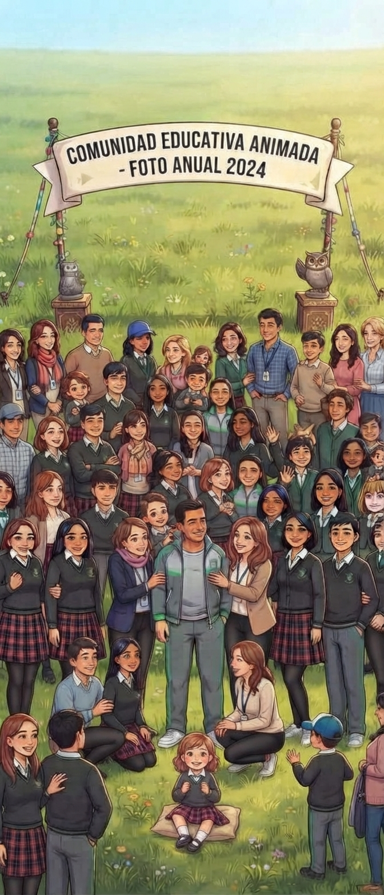

Aprender y participar
Acceso a información académica, actividades, noticias y oportunidades de participación escolar.
“Un espacio para todos los que hacen parte del colegio.”
Un espacio de Conecta Pana para estudiantes, familias, docentes, directivos y egresados de la I.E. Panamericano Puente de Boyacá.

Conecta Pana organiza este espacio para que cada integrante pueda encontrar información de acuerdo con su relación con la institución.
Acceso a información académica, actividades, noticias y oportunidades de participación escolar.
Información para acudientes sobre actividades, comunicaciones y espacios de participación institucional.
Espacios para comunicar actividades, orientaciones y recursos de interés para la comunidad.
Un punto de encuentro para conservar el vínculo con la institución y conocer sus novedades.
Consulta los documentos que debes preparar para realizar el proceso de matrícula en la institución.
Registro civil de nacimiento del estudiante.
Documento de identidad del estudiante, según corresponda.
Documento de identidad del padre, madre o acudiente.
Certificados de estudio o boletines de años anteriores, cuando sean requeridos.
Certificado de afiliación a salud, fotografías del estudiante y cualquier documentación adicional solicitada por la institución.
Reúne con anticipación los documentos necesarios para facilitar el proceso de matrícula.
Importante: estos son requisitos generales y pueden variar según el grado y las indicaciones oficiales de la institución. Verifica la información antes de realizar el trámite.
Un espacio para consultar actividades, encuentros y procesos de acompañamiento que hacen parte de la vida institucional.
Consulta aquí las fechas de entrega de informes académicos y las orientaciones para padres, madres y acudientes.
Espacio de orientación y formación para fortalecer el acompañamiento familiar, la comunicación y el bienestar de los estudiantes.
Información sobre reuniones de padres, encuentros institucionales y espacios de diálogo con la comunidad educativa.
Regresa a la página principal para conocer las demás secciones de Conecta Pana y acceder a la información institucional.
Volver a Conecta Pana